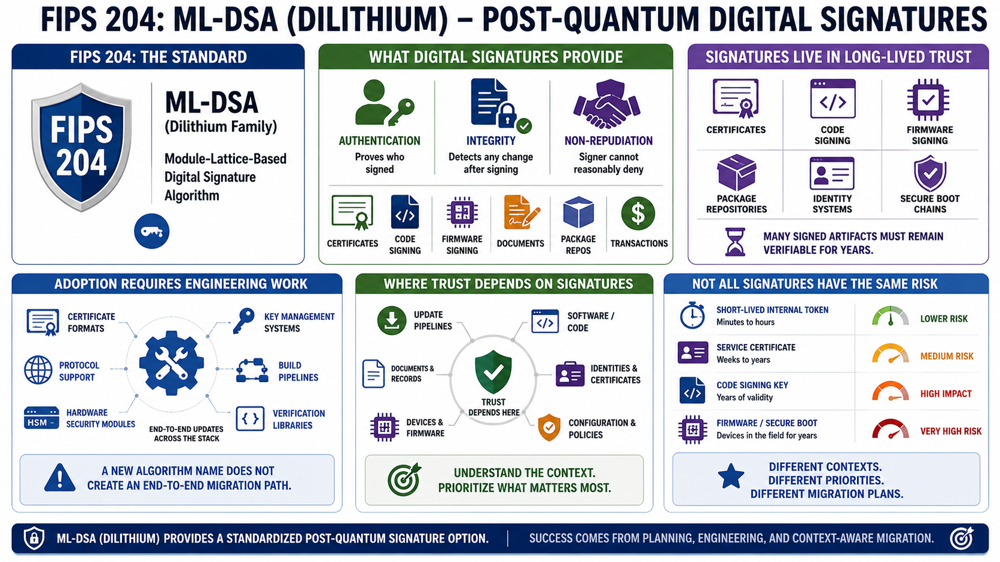

FIPS 204 and ML-DSA
Connecting to LMS... Progress: in progress

Narration
FIPS 204 is the Module-Lattice-Based Digital Signature Standard. The standardized algorithm name is ML-DSA, associated with the Dilithium family. Digital signatures provide authentication, integrity, and non-repudiation at a practical level. They help prove that a message, artifact, certificate, update, or transaction was signed by the holder of a private key and was not changed after signing.
Signature migration can be operationally harder than key establishment migration because signatures appear in long-lived trust structures. Certificates, code signing, firmware signing, document signing, package repositories, identity systems, secure boot chains, and update pipelines may all depend on signature formats and verification behavior. Some signed artifacts need to remain verifiable for years.
ML-DSA gives organizations a standardized post-quantum signature option, but adoption still requires engineering work. Certificate formats, protocol support, hardware security modules, key management systems, build pipelines, verification libraries, device firmware, and policy controls may all need updates. Teams should avoid assuming that a new algorithm name automatically creates an end-to-end migration path.
The practical migration question is where trust depends on signatures and how long that trust must last. A short-lived internal token has a different risk profile from firmware that may be installed on devices for years. A code signing key has different operational requirements from a service certificate. Understanding those differences helps teams prioritize signature migration instead of treating every use case the same.